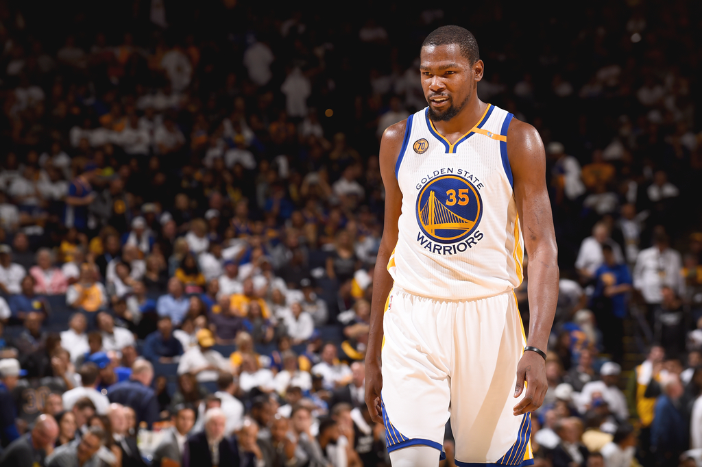
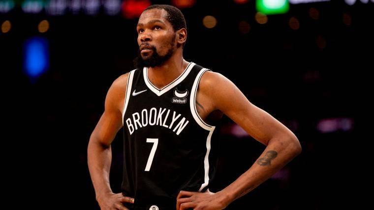

kevin Durant pasó 8 años en Oklahoma donde se convirtió en unos de los mejores anotadores de la NBA. En 2014 se llevó el MVP, promediando 32 puntos por partido.
Mejores Jugadas
En su primera temporada en Brooklyn nos dejó increibles jugadas. Después de su lesión, sigue siendo el mejor anotador de la NBA.

Golden State Warriors
En la temporada 16/17 se unio a los GSW donde consiguió 2 anillos en las dos temporadas que estuvo. Su lesión le impidió su tercer anillo.

Broklyn Nets
Ohio, Cleveland, el lugar de inicio de LeBron James. En el equipo de smvertirse en el mejor jugador de la historia de la NBA.